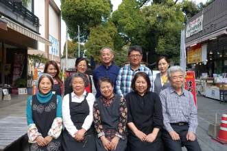

「京都市観光協会×訪日ラボ」
自治体担当者に送る インバウンドマーケティングの心得
観光を通じた地域活性化が注目されている昨今。中でも、平均旅行消費額が日本人国内旅行者の約 5 倍と高く、昨年 1 年間に 3000 万人を超えてなお増加が予想される訪日外国人に向けた施策は大きな可能性を秘めている
下記はジチタイワークス〇〇から抜粋し、記事は取材時のものです。 [提供] 提供元企業名-
目次タイトル目次タイトル目次タイトル
日本を訪れる観光客の数は増え続け、目標数字である4000万人が現実のものとなりそうな一方で、各地で未だ解決できていないのが「言葉の壁」。すでに用意されたガイドブックやHPの情報以上に、各地で出会う生の情報こそが旅の醍醐味といえるでしょう。
そんななか、現地の人とのふれあいやその土地の旬のニュースを得ることを可能にするサービスが登場しました。利用者がそれぞれ自国の言語で、自分がいつも使っているメッセージングアプリを用いて利用できる「Kotozna Group Chat」。104の言語に対応しているのみならず、QRコードを読み取るだけで新たなダウンロードの必要がないという画期的なサービスなのです。 -
目次タイトル目次タイトル目次タイトル目次タイトル
「初めて説明を受けたときは『そんな夢みたいな話ある？』と半信半疑でした。異なるSNSサービス間で、同時翻訳して会話ができるなんて、夢の世界じゃないですか（笑）。操作も簡単で、104言語に対応するという。自治体として求めていた全てが解決するサービスです」と佐藤さん。
つまり具体例を挙げると、日本人がラインに日本語で書いたメッセージが、瞬時に韓国人のカカオトークの画面に韓国語で流れます。チャットに参加するには普段自国で使っているSNSサービスを用いれば、新たなアプリをダウンロードする必要がないのです。
「多国籍の人びとに一度に情報を送るすべが欲しいと常々思っていました。臼杵を訪れた観光客の方にはランチ情報や交通情報など、生の声と今の状況をリアルタイムで受け取ってもらえますし、技能研修生などの居住者には、防災面で安心して臼杵に住んでもらえます。また、市内施設では店員とお客などが言葉の壁を気にせずにコミュニケーションができるようになるので、市民の皆さんの観光客への取り組み方も変わるでしょう」。臼杵市役所おもてなし観光課 課長・佐藤忠久さん
-
目次タイトル目次タイトル
「災害時には双方向ツールとしてではなく、一方通行の情報発信ツールとして利用する予定です。多国籍の不特定多数の外国人の皆さんにとって、自国の言葉で非常時の案内を受け取れることは、大きな安心につながるでしょう。自治体としても平時と違い、緊急性と即時性が求められる災害時に、一つのアクションだけで全ての方に一様に情報を流せるのはとてもありがたいサービスです。臼杵を訪れた全ての方に、安心して滞在し、安全に本国に帰っていただくのが我々自治体の使命ですから」。
近日中に総務省が推奨しているLアラートを利用し、臼杵市からのオリジナル緊急情報も日本人、外国人を問わず伝達していく予定です。
日本を訪れる観光客の数は増え続け、目標数字である4000万人が現実のものとなりそうな一方で、各地で未だ解決できていないのが「言葉の壁」。すでに用意されたガイドブックやHPの情報以上に、各地で出会う生の情報こそが旅の醍醐味といえるでしょう。
そんななか、現地の人とのふれあいやその土地の旬のニュースを得ることを可能にするサービスが登場しました。利用者がそれぞれ自国の言語で、自分がいつも使っているメッセージングアプリを用いて利用できる「Kotozna Group Chat」。104の言語に対応しているのみならず、QRコードを読み取るだけで新たなダウンロードの必要がないという画期的なサービスなのです。 -
目次タイトル目次タイトル目次タイトル目次タイトル目次タイトル目次タイトル
臼杵市では観光案内のみならず、外国人居住者・旅行者への災害時の情報伝達手段としても活用することを予定しています。
引用サイト名 url -
目次タイトル目次タイトル目次タイトル目次タイトル目次タイトル
- 日本語だけで対応が可能
外国人とのスマホ上でのやりとりが自動的に同時翻訳されるので、情報のやりとりは全て日本語だけでOK。
- 多言語化された観光ウェブサイトが簡単にできる
観光協会／観光地のフェイスブックページや、グループチャットでの会話は同時に104言語のウェブページとして世界中に発信されます。
- 端末の購入不要！
外国人のスマホ、および住民や市役所のスマホやパソコン上で動くので、端末の新規導入は不要。
 - 日本語だけで対応が可能
-
目次タイトル目次タイトル目次タイトル
主要観光地だけではなく、日本は地方にこそ素晴らしい観光の宝が眠っています。それらが言葉の壁やマンパワー不足のために多くのインバウンド客に伝わらないのはもったいない。数日しか滞在しない人に、手間をかけずにその地域の方と繋がってもらうにはどうしたらいいのか、またそれらを災害時にも活用できないかという想いで開発しました。
より多くの訪日・在日外国人の方々に安心と便利を届けたいという自治体の皆様の一助となれば幸いです。臼杵市役所おもてなし観光課 課長・佐藤忠久さん